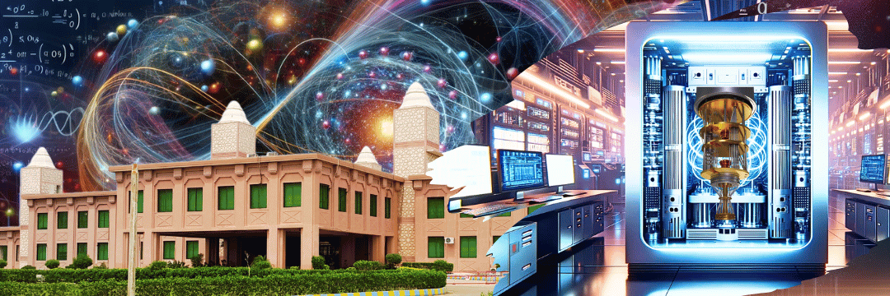

QuantumBeads aims to spread quantum education worldwide
Discover the latest breakthroughs in quantum computing algorithms and technologies.
17 - 18 January 2024
International Winter School 2024 on Quantum Computing Technologies
Winter School 2024 on quantum computing is being hosted by National Centre for Robotics and Automation: Condition Monitoring Systems NCRA-CMS Lab at Mehran University of Engineering and Technology Jamshoro, Pakistan.